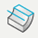
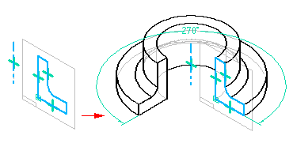
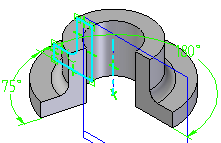

Revolve command
Use the Revolve command

to construct a protrusion or cutout by revolving a profile.
Note:
When constructing a revolved protrusion or cutout using more than one profile, all the profiles must be closed. All profiles must share a common axis of revolution.
You can define a non-symmetric extent for a revolved protrusion feature. For example, you can specify 180 degrees for direction 1, and 75 degrees for direction 2.

Protrusions in assemblies
When working with a weldment assembly, you can use this command to construct an assembly feature to define the weld bead material. For more information, see Weldments in assemblies.
How do I
Define an axis of revolutionConstruct a revolved extrusion or cutout
Define the extent of a revolved feature
Construct a revolved feature with an existing centerline axis
Learn more
Constructing revolved ordered featuresLook up more details
Revolve command barRevolved Cut command
Revolved Cut command bar
Axis of Revolution command